A Segunda Lei de Newton e o Princípio Fundamental da Dinâmica.
Imagine a seguinte cena cotidiana: uma mulher está em um supermercado, apoiada em um carrinho de compras parado, enquanto observa distraída o seu celular. Para que esse carrinho saia do seu estado de repouso e comece a se mover, o que ela precisará fazer? Naturalmente, ela deverá aplicar um esforço muscular, empurrando-o. Se esse mesmo carrinho estivesse vazio em vez de cheio, a tarefa de colocá-lo em movimento seria nitidamente mais fácil.
Essas percepções intuitivas são a base da Dinâmica.
Na Física, definimos Força como uma grandeza vetorial capaz de alterar o estado de movimento de um corpo ou de lhe causar deformações. É fundamental notar que a força é o agente causal da aceleração. Portanto, o objetivo deste relatório é analisar com rigor técnico a relação matemática entre a força resultante aplicada, a massa do objeto e a aceleração adquirida, consolidando o entendimento sobre o Princípio Fundamental da Dinâmica.
Experimentando com o simulador quando uma força empurra um bloco em uma superfície horizontal sem atrito, sua velocidade é alterada.
Abra o simulador:
https:
Escolha “Movimento”.
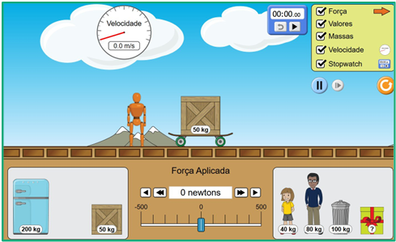
Experimentando com o simulador
No quadro superior direito (em verde), marque as opções “força”, “valores”, “massas” e “velocidades”.
Antes de iniciar a simulação, clique no botão “pausar/iniciar” (em roxo).
Para definir a massa do experimento, clique nos objetos/pessoas (em vermelho) e arraste até o carrinho. É possível usar mais de um objeto/pessoa.
Experimentando com o simulador
Na área destacada em azul, ajuste a intensidade da força usada na simulação. Isso pode ser feito clicando nas setas ou arrastando o botão azul.
Depois de definir massa e força, clique novamente em “iniciar” para começar. O boneco passará a empurrar o conjunto objeto–carrinho.
O velocímetro (em preto) mostra a variação da velocidade ao longo da simulação.
Experimentando com o simulador
É aconselhável que a atividade seja realizada em duplas ou trios, para facilitar o registro do tempo.
Um aluno fica responsável por iniciar e parar a simulação; outro, por acionar o cronômetro. Experimentando com o simulador
Para marcar o tempo, abra o simulador em outro computador e selecione a opção “stopwatch” para habilitar o cronômetro.
Ao iniciar a simulação, a dupla deve acionar simultaneamente a simulação e a contagem do tempo.
Simulação 1
A. Escolha um objeto, por exemplo: caixa de madeira de massa m = 50 kg.
B. Aplique quatro diferentes forças resultantes, anote a aceleração em cada caso e complete a tabela.
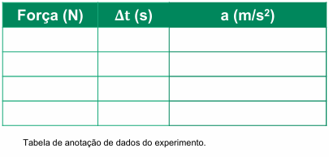
Simulação 2
A. Fixe a força resultante em 100 newtons, por exemplo.
B. Em seguida, escolha quatro massas diferentes (exceto a da caixa de presente, que será desconhecida) e calcule a aceleração de cada uma.
Complete a tabela com os valores obtidos:
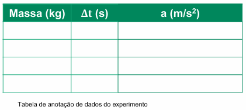
Exemplo de coleta de dados
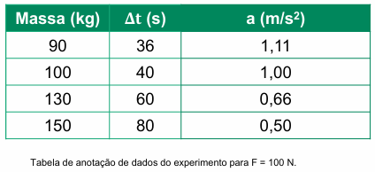
Assim como na atividade anterior, a aceleração pode ser calculada pela mesma expressão da aceleração escalar média:
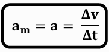
Diferente de grandezas escalares, como a temperatura, a força exige mais do que um valor numérico para ser compreendida. Ela possui propriedades vetoriais indispensáveis:
No Sistema Internacional de Unidades (SI), a unidade de medida da força é o Newton (N). Quando a soma de todas as forças que atuam sobre um corpo, a força resultante, é diferente de zero, observamos os seguintes efeitos:
Para validar as leis da Dinâmica, utilizamos o simulador PhET ("Movimento"). É fundamental ressaltar que, nas tabelas abaixo, os valores de aceleração () não são meramente aleatórios; eles foram calculados através da relação cinemática , onde a variação da velocidade é observada em função do tempo de aplicação da força constante.
Simulação 1: Massa Constante (50 kg)
Neste cenário, observamos como a variação da intensidade da força impacta a aceleração de um bloco de madeira fixo.
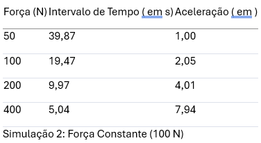
Simulação 2: Força Constante (100 N)
Aqui, mantivemos a força de empurrão fixa e variamos a massa total do sistema (carrinho + objetos/pessoas).
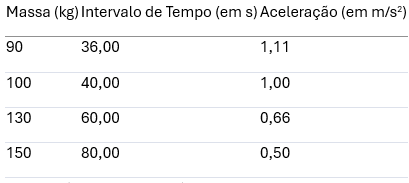
Subsequentemente à análise dos dados, desmistificamos as relações de dependência:
A síntese dessas observações permitiu a Isaac Newton enunciar que a força resultante exercida sobre um corpo é igual ao produto de sua massa pela aceleração. A formulação matemática é:
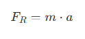
Onde:
FR: Força Resultante (soma vetorial de todas as forças aplicadas), em Newtons (N)
m: Massa do corpo, em quilogramas (kg).
a: Aceleração adquirida, em metros por segundo ao quadrado ().
É imperativo destacar: o vetor aceleração possui sempre a mesma direção e o mesmo sentido do vetor força resultante.
Um erro comum entre estudantes é supor que a força é proporcional à velocidade. Para desconstruir essa ideia, analisemos o exemplo de Darth Vader pedalando uma bicicleta em linha reta com velocidade constante (Movimento Retilíneo Uniforme - MRU).
A resolução de problemas de Dinâmica exige, primeiramente, o desenho do Diagrama de Corpo Livre (DCL), que consiste na representação vetorial de todas as forças que atuam no objeto isolado.
Demonstração Prática: Exercício UNICAMP/UFSCAR 2023
Considere um objeto de 2 kg. O diagrama de forças mostra:
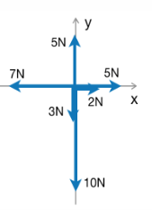
A força resultante em cada eixo terá os seguintes valores:
Decomposição e Resultante nos Eixos
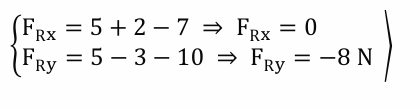
Aplicando o princípio fundamental da dinâmica, obtemos o módulo da aceleração do objeto:
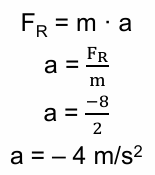
Aplicação da Segunda Lei de Newton Como a resultante em é nula, a força resultante total é a própria resultante em :
Conclusão Técnica: O sinal negativo indica que a aceleração aponta para baixo (direção vertical, sentido negativo de Y). A magnitude da aceleração é de 4 , conforme a alternativa "D" do gabarito oficial.
Princípio fundamental da dinâmica
O vilão Darth Vader se move em linha reta com velocidade constante (MRU).
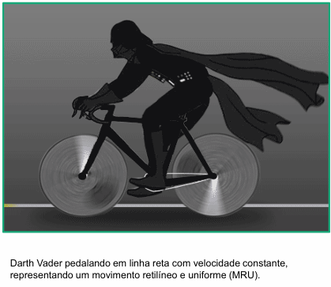
a) O que acontece com o movimento dele se a força resultante sobre o sistema (Darth Vader + bicicleta) for nula?
b) Que atitude ele poderia tomar que represente aplicar uma força horizontal para a direita?
c)O que aconteceria com o movimento do sistema se ele fizesse isso?
7. Conclusão e Síntese de Aprendizado
Ao final desta análise, recapitulamos os pilares da Segunda Lei de Newton:
Compreender esses conceitos não é apenas uma exigência acadêmica, mas a chave para decifrar a mecânica do universo - desde o simples empurrar de um carrinho de compras até as complexas trajetórias de satélites em órbita. A física nos mostra que, para cada mudança no mundo, existe uma força resultante agindo como motor da transformação.
1. 1. De acordo com o Princípio Fundamental da Dinâmica, qual é a relação matemática correta para calcular a força resultante (FR) sobre um corpo?
2. 2. No Sistema Internacional de Unidades (SI), quais são as unidades de medida para força, massa e aceleração, respectivamente?
3. 3. Se a massa de um corpo for mantida constante e a força resultante aplicada sobre ele for dobrada, o que acontecerá com a sua aceleração?
4. 4. Quando mantemos uma força resultante constante e aumentamos a massa do objeto, a aceleração obtida será menor. Isso prova que massa e aceleração são:?
5. 5. Sobre a natureza vetorial da força resultante e da aceleração, é correto afirmar que:?
6. 6. Um objeto de massa 20 kg está sujeito a uma força resultante de 50 N. Qual é a intensidade da aceleração adquirida por esse corpo?
7. 7. A força é uma grandeza vetorial capaz de realizar quais ações principais em um corpo?
8. 8. De acordo com os experimentos e a teoria de Newton, se a força resultante sobre um sistema em movimento (como Darth Vader em sua bicicleta) passar a ser nula, o que acontece?
9. 9. Em um diagrama de corpo livre, se um objeto de 2 kg sofre uma força resultante de -8 N no eixo Y (para baixo), qual será sua aceleração?
10. 10. Newton afirmou: "Se vi mais longe, foi por estar sobre ombros de gigantes". Isso indica que suas leis:?